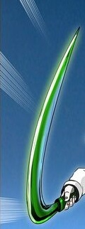

Зелёный апрель - орудие, в виде крюка, созданное Ашулом Эдвару в серии "13 месяцев". Владелец: Ха Юри Захард.

Активируемое оружие из серии 13 месяцев, принадлежащее в данный момент Ха Юри Захард. В неактивированном состоянии выглядит, как большой зелёный крюк с зелёной, перевязанной, видимо, листвой, рукоятью. При активации способен увеличиваться в размерах, личность же, заточенная в нём, была показана лишь мельком. Изначально он был выдан старшей Анак Захард, но из-за того, что она вышла замуж и родила ребёнка, стала преступницей и отдала Зелёный апрель своей дочери, которая теперь носит её имя. На этаже испытаний Юри Захард отобрала зелёный апрель у младшей Анак[1] и вернула его в семью Захард, тем самым она сильно повысила свою репутацию.